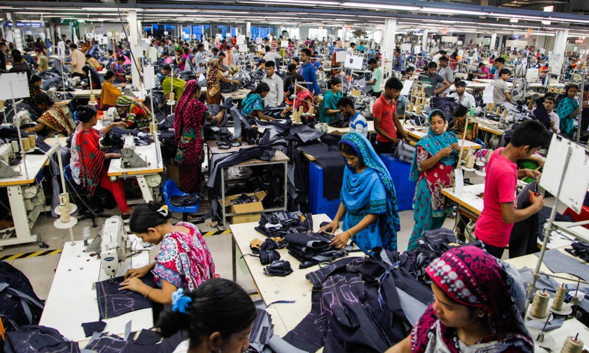

Exploitation in the Industry
The industry's rapid production model relies on cheap labor which is almost exclusively taking place in countries where labor costs are low. Not only are the costs of labor low, but the quality of the environment in which the workers work is even lower. However, it does not stop there. My first source explains the story of a girl who took a tour for her exchange program in Dhaka, Bangladesh. During her tour, she visited a factory owned by a fast fashion company. When she stepped inside the factory, she was immediately struck by the pungent odor of chemicals. was the predominance of women and children among the factory workers. She later learned that these individuals toiled for extended hours, often day and night while inhaling toxic fumes, making the USD equivalent of less than $2 a day, causing them to make less than the living wage of Dhaka which is around $230. As stated earlier, it is not only adults that are subjected to these inhumane conditions but children as well. My second source states that there are over 170 million children who are forced into doing child labor. This includes a good amount of them working with textiles and garments. Instead of having a regular childhood making friends and being kids, these children are working many more hours every day than they are not working in unsafe environments that lack adequate ventilation and often have faulty machinery that can cause extreme injury.
Pollution

If you thought that the worst of the industry was behind us, you are sadly mistaken. The fast fashion brand is notorious for being one of the most harmful industries in the entire world. It is the cause of some of the most severe damage that our planet has received in its entire history. Fast fashion primarily harms our planet in two ways. The first is through water pollution. As I stated earlier, chemicals such as lead and ink are constantly being used to make these clothes. According to my sixth source , the garbage is thrown into landfills which take hundreds of years to decompose. As a result, these piles sit in the ocean for at least two centuries and are constantly being filled with new clothes which keeps restarting the process. Most people who purchase are unaware that when they press checkout on websites like Shein, they are unintentionally aiding in water pollution. However, it is not their fault as they were never made aware of this and are encouraged by these companies to keep buying with them.